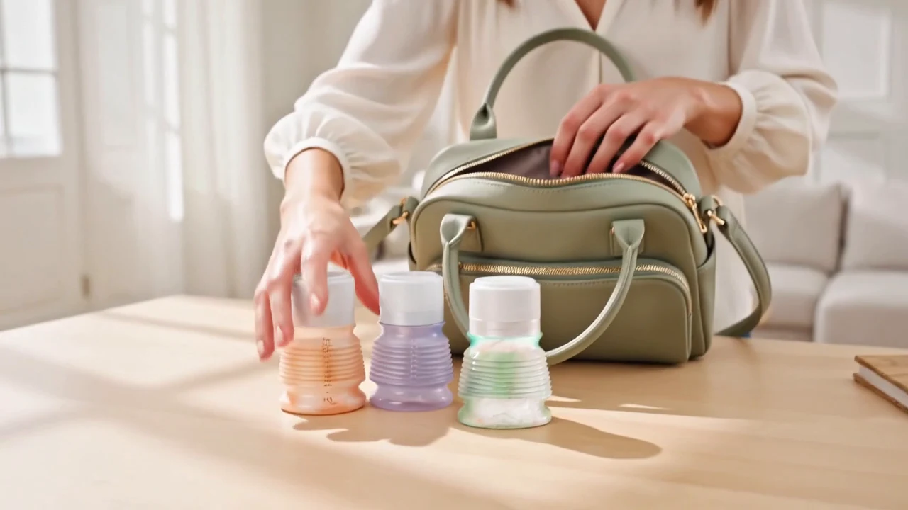
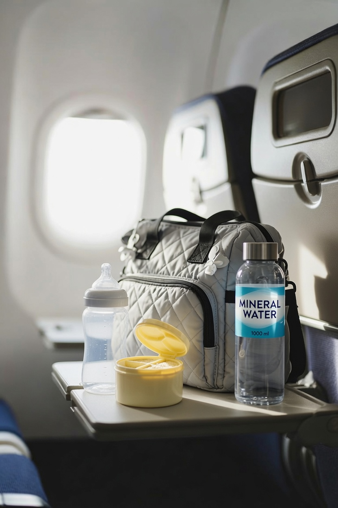

Il tient dans une poche.
Il ne pèse presque rien.
Voyager avec bébé : le biberon nomade pliable en avion, en voiture, à la plage.
Replié, BIBEON fait 9,5 cm et pèse environ 35 g, capuchon compris. Trois biberons tiennent dans le volume d’un seul biberon rigide.
Et si vous donnez du lait en poudre, pré-dosez-le chez vous : plus de boîte à transporter.

Chez vous
La dose, directement dedans.
Le biberon replié reçoit sa poudre. Capuchon, et il attend dans le sac ou le pochon, à l’abri de la lumière — des heures, des semaines.
Les 3 gestes
Dosez. Dépliez. Ajoutez l’eau.

1
Dosez
La poudre dans BIBEON replié. Jusqu’à 8 doses.

2
Dépliez
Desserrez la bague sans la retirer. Dépliez entièrement.

3
Ajoutez l’eau
Jusqu’à la graduation. Refermez, secouez. C’est prêt.
Dehors
De l’eau, et c’est prêt.
La bouteille du sac suffit. Versez jusqu’à la graduation, refermez, secouez.
Le repas commencé
Plein, il vide l’air.
Repliez jusqu’au niveau du lait : plus d’air au-dessus. C’est le seul endroit où le moins d’air touche bébé — moins d’air avalé.
Dans le sac
Fermé, il est hermétique.
Tête en bas, secoué : pas une goutte. Sans obturateur — le capuchon bouche la tétine.
Le cas d’école
L’avion, d’abord.
Une tablette, pas la place de bouger. La poudre passe les contrôles ; l’eau, on vous la sert à bord. Dépliez, versez, secouez : le repas est prêt sans quitter le siège ni transvaser.


Partout où vous allez
Douze situations, un seul geste.
Le biberon en avion
La poudre est sèche : rien à déclarer en cabine. L’eau s’ajoute après les contrôles.
La voiture et les longues routes
Trois biberons dosés dans la boîte à gants. À l’aire, l’eau de la bouteille, et c’est prêt.
Le train et le bus
La tablette fait la taille d’un livre. Il ne reste qu’un geste : déplier, ajouter l’eau.
La plage et la piscine
La place d’un tube de crème solaire. La poudre reste enfermée, loin du sable.
Le camping, le van, le road-trip
Peu de place, peu de vaisselle : il se replie une fois vide.
La randonnée et la montagne
Le repas pèse le poids de sa poudre, et prend le volume d’un petit pot.
La ville, la poussette, le restaurant
Une course d’une heure sans le sac à langer. Au restaurant, un verre d’eau suffit.
Parcs, zoos, musées, événements
Files d’attente, sacs contrôlés : le biberon préparé d’avance ne dépend de rien sur place.
Le ferry et la croisière
Trois biberons dosés tiennent dans le volume d’un seul biberon rigide.
Les très longs trajets et l’expatriation
Vingt heures, plusieurs repas, aucune cuisine : jusqu’à 8 doses dans un seul biberon replié.
La nounou et les grands-parents
Un coloris par enfant, la dose du jour déjà dedans, le mode d’emploi fourni.
Le biberon de secours du sac
Celui qui reste dans le sac à main, prêt depuis des semaines, pour la sortie qui s’allonge.
Ils l’emportent
Dans le sac, depuis des années.
« Se faufile partout, aussi bien dans mon sac à main que dans le sac à langer. »
Celia B. · 2025« Il tient dans une poche de manteau. »
Denise R. · 2025« Je peux le mettre dans mon sac à main pour avoir toujours de l’eau à portée de main. »
Cesme Y. · 2022« J’ai acheté ce biberon pour partir en voyage en avion. La place est limitée dans le sac, donc il est devenu un essentiel des voyages. »
Carole B. · 2024« Il ne quitte plus notre sac à langer. »
Charlotte V. · 2025
4,4 / 5 sur 65 avis — lire les avis sur ConsoBaby
Avant de partir
La liste courte d’une sortie avec bébé.
- Les biberons dosésUn par repas, poudre dedans, repliés et fermés.
- De l’eauUne bouteille suffit ; elle s’ajoute sur la poudre au moment du repas.
- La tétine et son capuchonDéjà sur le biberon. Débit 6 mois fourni.
- Un bavoir et un langeLes deux seules choses que le pliage ne remplace pas.
- Un goupillonPour plusieurs jours, en camping ou à l’hôtel.
- Couches et lingettesLe reste du sac, une fois le repas réduit à une poche.
Questions fréquentes
Voyager avec un biberon.
Comment préparer les biberons pour un long trajet en voiture ?
Dosez le lait en poudre à la maison, dans les biberons repliés, un biberon par repas prévu, et emportez une bouteille d’eau. À l’arrêt, vous dépliez, vous ajoutez l’eau, vous secouez. Aucune boîte doseuse à manipuler dans l’habitacle.
Peut-on emporter du lait en poudre en avion ?
Le lait en poudre est une matière sèche : il ne relève pas de la règle des liquides. Transporté dans un biberon replié, il passe avec le bagage cabine, et l’eau s’ajoute après les contrôles. Les règles applicables aux aliments pour bébé varient selon les aéroports et les compagnies : vérifiez avant le départ.
Que mettre dans le sac pour une sortie d’une heure ?
Un biberon déjà dosé, un peu d’eau, une couche, des lingettes, un bavoir. Avec un biberon pliable, l’ensemble tient dans un sac à main et le sac à langer reste à la maison.
Comment nettoyer le biberon en camping ou sur la route ?
À l’eau chaude savonneuse au goupillon, puis rinçage abondant. Le lave-vaisselle est interdit. Une fois sec, le biberon se replie et reprend la place d’un petit pot.
Combien de biberons emporter pour une journée entière ?
Autant que de repas prévus. Trois biberons pliables déjà dosés tiennent dans le volume d’un seul biberon rigide — et un seul biberon peut contenir jusqu’à 8 doses de lait en poudre si vous préférez n’en emporter qu’un.
Convient-il à la plage et à la piscine ?
Oui : la poudre reste enfermée dans le biberon replié, à l’abri de l’air et du sable, et il n’y a pas de boîte doseuse séparée à ouvrir sur une serviette.
La boutique
Replié, il tient sous le passeport. Cinq coloris, lequel part avec vous ?
À partir de 35 €·livraison offerte·retour offert sous 30 jours
Le biberon, l’R en moins®.